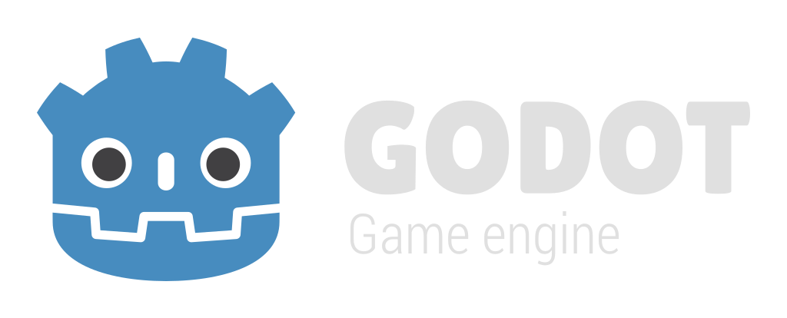

The Godot Web Editor has some limitations compared to the native version. Its main focus is education and experimentation; it is not recommended for production.
For a more optimal experience, download the native Godot Editor.
Refer to the Web editor documentation for usage instructions and limitations.
The following features required by the Godot Web Editor are missing:
If you are self-hosting the web editor, refer to Exporting for the Web for more information.
